Welcome to the Kisekae Color Editor program documentation. The Color Editor menu provides a standard drop down list of commands for all palette editing functions.
The Kisekae Color Editor can load any KiSS image file or palette file, including non-palette files such as truecolor or Cherry Kiss files. Truecolor files do not have palettes, however these images can still be previewed and some transparency settings can be changed.
New Palette
New palettes are created from the New menu on the Color Editor main program screen. 16 color or 256 color palettes can be created. New palettes are initialized to a standard set of colors. 16 color palettes are initialized to 8 variants of grey and 8 standard colors. 256 color palettes are initialized to the default colors of a 16 color palette, followed by 240 new colors that span the color circle.
New palette files can be saved to a named file directory through the File-Save As command. Palette files can be saved as KiSS KCF files or PAL files. If a palette is saved a new file is written to the named file directory.
New Palette Group
New palette groups are created from the New menu after a palette file has been loaded or created within the Color Editor program. A new palette group has the same number of colors as currently exist in the palette. It is not possible to create a 16 color palette group within a 256 color palette, or vice versa.
New palette groups are initialized to the standard set of colors as described for a new palette. The new palette group is assigned the next consecutive palette group number within the palette.
The Open command is used to open an existing KiSS palette file or any other type of image file recognized by the Kisekae UltraKiss program.
Figure 1 shows a standard Microsoft Windows file Open dialog. The file Open dialog can be used to select any file. If the selected file is of a palette or image type recognized by the Kisekae program then the file will be opened. If the file is a compressed archive file the archive is searched for KiSS palette files or image files. If the file is not of a type recognized by the program then an error message will be displayed.
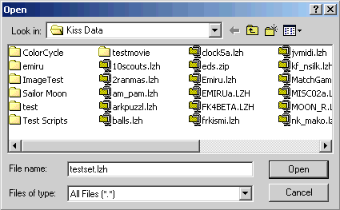
Figure 1. Open Dialog
The example in Figure 1 selected the archive file TESTSET.LZH. When opening archive files, the Color Editor will display a selection list of suitable archive elements. These elements will be palette files or image files. If a palette file or an image file that contains an internal palette is selected then this element will be automatically loaded. If a KiSS cel file is selected then a second selection list will be shown to choose the appropriate KiSS KCF or PAL file. Figure 2 shows a palette selection dialog for the TESTSET.LZH file and a palette selection dialog for the cel 0-BEGIN.CEL.
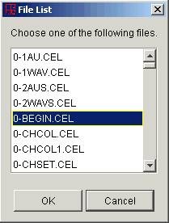 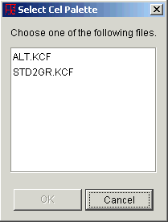
Figure 2. Palette Selection
Once the palette file and the associated image cel is selected the files are opened and processed. Figure 3 shows a the Color Editor with a KiSS cel and palette file loaded.
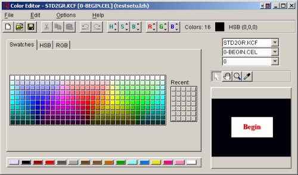
Figure 3. Color Editor Window
The active palette file name is shown in the Palette drop down box. The active image is shown in the Image Cel drop down box. The palette group in use is shown in the Palette Group drop down box. If a truecolor image has been loaded the Palette drop down box will be blank.
The Close command is used to close the currently active palette or image file. If the palette has been updated or modified the user will be prompted to save the current palette file or image cel. Figure 4 is an example of a close prompt dialog. Cancelling the save will cancel the close request. If the palette file is to be saved the File-Save As command is invoked. If not, the close operation will continue and all changes are lost.
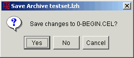
Figure 4. Close Prompt Dialog
Files loaded from a compressed archive are written to the original archive file from which they were loaded.
KiSS data sets are, by default, saved to the file directory or compressed archive file from which they were loaded. For example, if a palette file or image cel was loaded from an archive file then any updated elements will be written to this archive file. If the files were loaded from a file directory then the Save operation writes all updated elements into this directory. For data sets loaded from a compressed archive file the complete archive file is completely rewritten, replacing all updated elements in the archive. For data sets loaded from a directory only the updated element files are written.
The Save operation is performed in the background. Figure 5 shows the file save window that tracks the progress of the write operation. The save operation may be cancelled at any time. If an error occurs an appropriate message will be displayed and the save operation will be cancelled. If the save operation is successful the dialog window will be automatically closed.
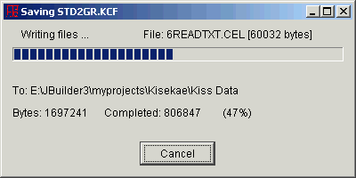
Figure 5. File Save Window
Note that files are written to temporary files on disk and then renamed to the permanent file name if the save operation is successful. This ensures that backup file copies exist in the event of a program error. The backup file is normally deleted upon completion of a successful save. Backups can be retained permanently if the UltraKiss Keep File Backup program option has been set.
The Save As operation provides a means to save the currently loaded palette file to a new file. If the file was loaded from a compressed archive file then the Save As function will save the complete data set to a new compressed archive file name. If the file was loaded from a file directory then the Save As function can specify a new name for the palette element.
Figure 6 shows a standard Microsoft Windows file Save As dialog. The Color Editor Save As dialog will only accept element file names. You cannot change the name of the archive file from which the palette element was loaded. To change archive file names, use the Archive Manager tool.
The Save operation proceeds as described in the File-Save command.
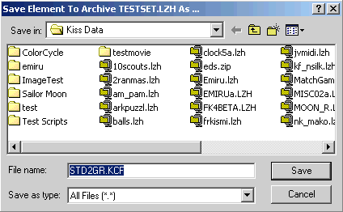
Figure 6. Save As Dialog
The Import command is used to initialize the palette to the contents of another KiSS palette file. Importing colors from an external palette file replaces all palette groups within the current palette. This operation can be used to quickly and easily set palette values to the same values as some other palette.
Palettes are imported from external KiSS KCF files or PAL files. You cannot import palettes from image files such as GIF or BMP images. The File Open dialog as shown in Figure 1 is used to select the file to be imported. You can choose to import palette files from archive files or directory files. If you open a compressed archive you must select a palette file from a selection dialog as shown in Figure 2.
When the file is imported all palette groups in the current palette will be replaced and the preview image will be adjusted to show the colors from the new active palette group.
The Import command is undoable. The Edit-Undo function can be used to reverse the file import and restore the active palette to its previous state.
The Export command is used to write the active palette contents to an external KiSS PAL file. A PAL file is a text form of the KiSS palette. This text representation shows the numeric RGB values for all colors in each palette group of a KiSS palette. PAL files are useful for manual editing of color values. The edited values can be imported back into a KiSS palette file. Figure 7 shows an extract of a PAL file.
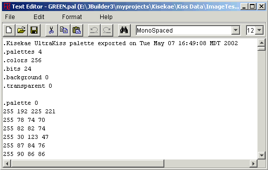
Figure 7. UltraKiss PAL File
The Merge command is used to append the contents of another KiSS palette file to the current palette. Merged palettes have traditionally been used in KiSS data sets to create one palette file that contains all the colors for many different image cels. An image cel would refer to a different palette group within the merged palette on its configuration line.
Palettes are merged from external KiSS KCF files or PAL files. You cannot merge palettes from image files such as GIF or BMP images. The File Open dialog as shown in Figure 1 is used to select the file to be merged. You can choose to merge palette files from archive files or directory files. If you open a compressed archive you must select a palette file from a selection dialog as shown in Figure 2.
When the file is merged a new set of palette groups will be added to the current palette. These palette groups will show in the Palette Group drop down box.
The Merge command is undoable. The Edit-Undo function can be used to reverse the file merge and restore the active palette to its previous state.
The Page Setup dialog is an operating system dependent interface into the print control subsystem to size and orient the print page in preparation for printing. Figure 8 shows the Page Setup dialog for a Microsoft Windows operating environment. Not all systems will support all features for page control.
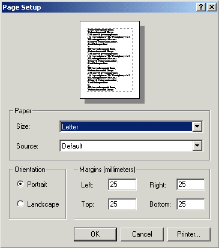
Figure 8. Page Setup Dialog
The Print Preview command is used to preview all print pages before printing. Figure 9 shows an example of the Color Editor Print Preview screen. The Color Editor will center and scale the current page image on the print page. The preview image of the print page can be scaled to any size required by changing the percentage value in the preview control field. Preset values of 10%, 25%, 50% and 100% are provided for convenience.
The Page Setup can be changed from this dialog and Printing can be initiated directly.
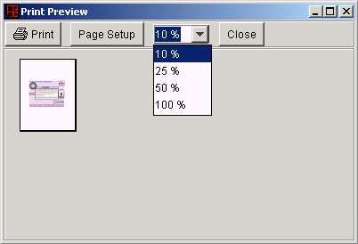
Figure 9. Print Preview Dialog
The Print dialog is an operating system dependent interface into the print control subsystem to initiate printing of a print page. Figure 10 shows the Print dialog for a Microsoft Windows operating environment. Not all systems will support all features for print control.
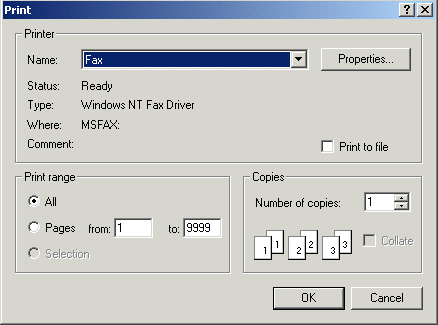
Figure 10. Print Dialog
The Properties command shows a standard dialog window to display attributes of the currently loaded KiSS palette file. Figure 11 is an example of a KiSS palette properties dialog. This dialog provides detailed information on the technical aspects of the active palette file and provides control buttons to view additional information about associated data objects.
The properties command will show palette properties for KiSS palette files loaded into the Color Editor. The properties command will show an image properties dialog for GIF or BMP or truecolor images that were loaded into the Color Editor.
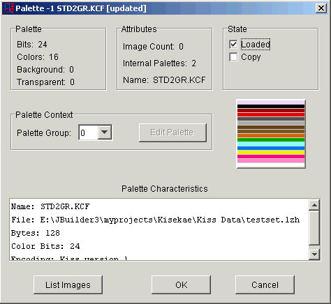
Figure 11. Palette Properties Dialog
This dialog window is a entry into the complete Kisekae UltraKiss subsystem to display the attributes and properties of all objects associated with an active KiSS data set. Refer to the UltraKiss Object Properties subsystem for a comprehensive description of all subsystem features, dialogs, and operation control.
The Update command is used to apply palette editing changes to the currently loaded UltraKiss configuration. The Update command is only available if the Color Editor is editing an active palette or image file that was referenced from within UltraKiss. Updating the UltraKiss configuration does not terminate the Color Editor.
You would use the Update command to test your color changes within UltraKiss. These color updates are undoable, so if the results are not satisfactory you can undo the change within UltraKiss and continue with your Color Editor session.
Updated files reside in memory. The changes are not permanently until the active configuration is saved. To permanently save the updated file, use the File-Save command.
The Exit command closes any currently active data set and terminates the Color Editor program execution.
If the palette or image file in the Color Editor has been updated or modified the user will be prompted to either save the current data set or update the currently active configuration depending on the source of the palette or image file. Source files that were loaded through an UltraKiss session can be directly updated in memory. Files that were explicitly opened from a different archive file or directory can be saved to disk. Figure 4 is an example of a close prompt dialog. Cancelling the save will cancel the exit request. If the current file is saved then the File-Save As command is invoked and the Color Editor program will terminate upon completion of the save. If changes are not saved they will be lost.
If the Color Editor program is terminated by closing the window the Exit command will be automatically invoked. The option to cancel the Exit request will not be available.
Many edit commands operate with a selected set of colors. Colors are selected through the Edit-Select All command or graphically with a mouse selection operation. A mouse selection operation is performed by positioning the mouse over a color in the palette and pressing the left mouse button.
Selected colors are visually identifiable. Each selected color shows a red border around the palette entry.
If a selection set exists new colors can be added to the selection set by placing the mouse over the new object and pressing the left mouse button while holding the Ctrl key down.
Colors can be removed from an existing selection set by placing the mouse over the requested object and pressing the right mouse button. Figure 12 shows an example of multiple selected colors.
The active color in a selection set can be changed by placing the mouse over a selected color and holding the Ctrl key down while left clicking.
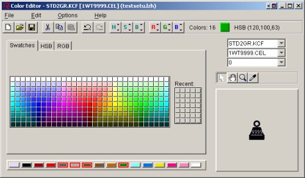
Figure 12. Selected Colors
The Color Editor supports full undo and redo edit recovery. Most editing changes made to a KiSS palette file are reversible. Undo support is available for Edit Cut, Copy, and Paste operations. Transparency and background color changes can be undone. Palette group additions and deletions can be undone. Color selections can be undone. Every undo operation reverts the palette to its prior state.
The Color Editor supports full undo and redo edit recovery. Most editing changes made to a KiSS palette file are reversible. Redo support is available for Edit Cut, Copy, and Paste operations. Transparency and background color changes can be redone. Palette group additions and deletions can be redone. Color selections can be redone. Every redo operation applies the previously undone edit to restore the palette to its former state.
The Undo All command restores the palette contents to its initial state as of load or last save. All edit changes are lost.
The Cut operation will remove selected colors from the current palette. Colors, when cut, are placed in the clipboard and can be referenced through a subsequent Edit-Paste command. Cut colors are replaced with a black color.
The Copy operation copies selected colors to the clipboard. The colors in the clipboard can be referenced through a subsequent Edit-Paste command. Copied colors retain their order in the palette but are not associated with a fixed color index. If colors are pasted into a palette they will be placed into the current palette in the order of the current color selection set.
The Paste operation transfers colors from the clipboard into the current palette. Colors, when pasted, are inserted into the currently selected color set of the palette. If the current selection set does not contain the same number of colors as exist in the clipboard, then a warning message will be displayed. If the paste operation is accepted the clipboard colors will be copied in order into the selection set.
If the clipboard contains fewer colors than exist the selection set, only the necessary colors in the selection set will be changed. If the clipboard contains more colors than exist in the selection set, only sufficient colors from the clipboard will be transferred.
The Select All command is used to select all colors in the current palette.
The Select Copy command is used to automatically select the specific color indexes in the current palette as exist for all colors copied to the clipboard. This command can be used to ensure that the actual copied color indexes are retained for a subsequent paste operation.
The Select Similar HSB command is the menu command equivalent to pressing the Hue, Saturation, or Brightness buttons on the Color Editor toolbar. This command automatically selects similar colors in the palette that match, within the defined sensitivity ranges, the HSB values of the current active color.
Selecting similar colors is one of the key functions of the Color Editor. This function lets you choose related palette colors so that relative or absolute color adjustments can be made to change color in a restricted way. If you choose an active color and all related colors, then it is possible to change these colors to new variants with the color chooser.
The best way to change the color of an image cel is to first select a pixel in the preview image with the eyedropper, then select all 'similar' colors using the Hue button. The sensitivity of the Hue or Saturation or Brightness button is controlled with the little up-down arrows in the corner of the button. As you increase the sensitivity value more and more colors from the palette will be chosen.
Once you have the colors selected, switch to the HSB panel of the color chooser and drag the slider to a new hue. The preview image will change to show the new colors. Pixel hues are adjusted based upon their relative differences from the first, or active color that you selected with the eye dropper. Dark colors remain dark and light colors remain light.
When new colors or tints are applied to the image relative adjustments are made to color hue, brightness and saturation. If you use the color chooser and significantly darken or lighten differences from the active color then some related colors in the selection set may become 'saturated', or reach their limit of change. If necessary, you can turn off relative brightness, saturation or hue changes by right clicking on the appropriate button to disable it.
If the results in the preview window are not what you want then simply undo the color change. If you missed selecting all the necessary colors, simply increase the sensitivity on the Hue selection button and try again, or pick up a different colored pixel from the preview image and use the Hue button to select a different set of 'similar' colors. Best results occur if you initially select a middle-of-the-road color for the active color.
For further information refer to the Color Editor Introduction or the UltraKiss Tutorial documents.
The Select Similar RGB command is the menu command equivalent to pressing the Red, Green, or Blue buttons on the Color Editor toolbar. This command automatically selects similar colors in the palette that match, within the defined sensitivity ranges, the RGB values of the current active color.
Selecting similar colors is one of the key functions of the Color Editor. This function lets you choose related palette colors so that relative or absolute color adjustments can be made to change color in a restricted way. If you choose an active color and all related colors, then it is possible to change these colors to new variants with the color chooser.
See the discussion for Select Similar HSB for further details.
The Set Color Count function sets the maximum number of colors for the palette file. Each palette group within the file will have the same number of colors. The minimum number of colors is 1 and the maximum number of colors is 256. Figure 13 shows the color count dialog.
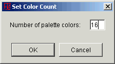
Figure 13.
If the number of colors in a palette is increased the new, appended colors will all be initialized to black. If the number of colors is reduced all extraneous colors are dropped. Reducing the color count truncates the palette.
Setting the color count is an undoable operation. The original number of colors can be restored through an Edit-Undo operation.
The transparent color can be set or changed for any image loaded into the Color Editor. For palette type images the transparent color will be one of the colors in the palette. For truecolor images the transparent color can be any color RGB value within the image.
The Set Transparent command will show a color selection menu as seen in Figure 14. This menu will show all palette colors for palette images, or just the active color for truecolor images. The current transparent color is highlighted in red. To select a new transparent color left click the mouse while over one of the color swatches. To clear the transparent color, right click the mouse.
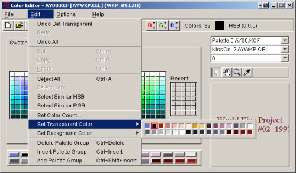
Figure 14.
Only one color in an image can be the transparent color. By definition, KiSS cel palette images use color index 0 from the KiSS KCF palette file as their transparent color. Although the Color Editor will let you change the transparent color for KiSS cels, this new setting will not be retained if the file is saved. GIF images allow any palette color to be the transparent color and this setting will be retained if the GIF file is saved. BMP images do not maintain transparency information. UltraKiss will retain transparency settings for BMP files within the KiSS data set configuration file when the configuration is saved. Truecolor images such as Cherry Kiss cels maintain the transparent color within the image data. 24 bit truecolor files such as PPM files and raw BMP files will maintain the transparent color within the KiSS data set configuration file. JPG files do not support transparency and, although you can set a transparent color, this color may not remain transparent if the file is saved.
The Set Transparent command is undoable.
The background color can be set or changed for any image loaded into the Color Editor. For palette type images the background color will be one of the colors in the palette. For truecolor images the background color can be any color RGB value within the image.
The Set Background command will show a color selection menu as seen in Figure 15. This menu will show all palette colors for palette images, or just the active color for truecolor images. The current background color is highlighted in red. To select a new background color left click the mouse while over one of the color swatches. To clear the background color, right click the mouse.
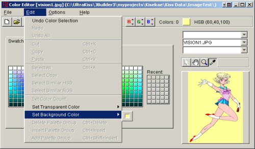
Figure 15.
Only one color in an image can be the background color. By definition, KiSS cel palette images use color index 0 from the KiSS KCF palette file as their background color. Although the Color Editor will let you change the background color for KiSS cels, this new setting will not be retained if the file is saved. GIF images allow any palette color to be the background color and this setting will be retained if the GIF file is saved. Background settings are not maintained for other image files. UltraKiss does not maintain background settings for files within the KiSS data set configuration file.
The Set Background command is undoable.
The Delete Palette Group command removes all active palette group from the palette file. All remaining palette groups in the file are renumbered. The next palette group in the palette will become the new active palette. If the last palette group in the palette is deleted, then the first palette group in the file will become the new active palette.
The Delete Palette Group command can be undone.
The Insert Palette Group command creates a new, empty palette with the same group number as the currently active palette group. The active palette group and all remaining palettes in the file are renumbered.
The Insert Palette Group command can be undone.
The Add Palette Group command inserts a new, empty palette into the palette file at the end of the existing set of palettes.
The Add Palette Group operation can be undone.
The Palette Panel switch turns the palette panel on and off. If this switch is off the palette will not be shown.
The Color Chooser switch turns the color chooser panel on and off. If this switch is off the color chooser will not be shown.
The Preview Pane switch turns the preview image panel on and off. If this switch is off the preview image will not be shown.
The Selection Control switch turns the palette, image cel and palette group drop down boxes on and off. If this switch is off the selection boxes will not be shown.
The Show Background switch, if on, will paint all transparent colors in the preview image with the background color. This switch is useful to see the effects of background color changes.
The Relative Changes switch, if on, enables relative color adjustments to all selected palette colors whenever a new color is selected. Relative color adjustments apply the relative difference between the active color and the new color to all selected colors in the palette. Relative color changes ensure that hue, saturation and brightness differences are applied on an individual basis to each selected color.
If this setting is off then absolute color changes are made. Every selected color is set to the new color.
The Hue, Saturation, and Brightness controls on the toolbar can each have individual sensitivity values for relative color changes. If the Link HSB Sensitivity switch is on then the same sensitivity value is used for Hue, Saturation, and Brightness. Any change to one control sensitivity value will be applied to all controls.
If the Link HSB Sensitivity switch is off then sensitivity values can be individually adjusted for each of the Hue, Saturation, and Brightness color component controls.
The Red, Green, and Blue controls on the toolbar can each have individual sensitivity values for relative color changes. If the Link RGB Sensitivity switch is on then the same sensitivity value is used for Red, Green, and Blue. Any change to one control sensitivity value will be applied to all controls.
If the Link RGB Sensitivity switch is off then sensitivity values can be individually adjusted for each of the Red, Green, and Blue color component controls.
The Contents command invokes the Color Editor online help system. Access to all product documentation is available. The online help system provides a complete index and navigation system to various topics of interest.
The help system is organized into various areas for each program tool.
The About command shows a standard program information dialog that provides copyright and program version information. Figure 16 show an example of the Kisekae UltraKiss program About dialog. The program icon is the Kanji character for clothing and the Japanese characters show the Kanji word for paper dolls.
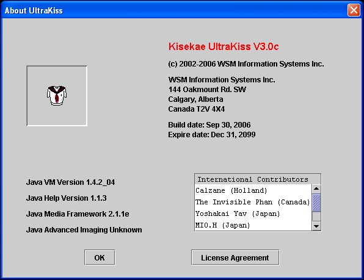
Figure 16. About Dialog
Next Document: Toolbar
Commands
Prior Document: Color Editor Introduction
Copyright (c) 2002-2023 William Miles